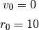

Simulación del movimiento de caída de una bola¶
En esta sección vamos a simular la caída vertical de una bola desde una altura dada hasta que golpea el suelo y vuelve a subir debido al golpe. Como dijimos en la sección anterior, para llevar a cabo esta simulación lo único que necesitamos son las ecuaciones del método de Euler:
(1)
Por ejemplo, con ellas podemos calcular la primera posición que va a tener el
objeto haciendo  , con lo que tenemos
, con lo que tenemos

 y
y  no son valores que puedan obtenerse a partir del
método, sino que deben ser definidos por el usuario antes de empezar la
simulación. Éstos corresponden a la velocidad y la posición iniciales de la
bola, respectivamente. Para nuestro caso vamos a asumir que:
no son valores que puedan obtenerse a partir del
método, sino que deben ser definidos por el usuario antes de empezar la
simulación. Éstos corresponden a la velocidad y la posición iniciales de la
bola, respectivamente. Para nuestro caso vamos a asumir que:

lo que quiere decir que la bola se deja caer sin velocidad desde una altura de 10m.
Por su parte, el valor de  es la aceleración que experimenta la
bola durante su recorrido, que es igual al valor de la gravedad, es decir que
es la aceleración que experimenta la
bola durante su recorrido, que es igual al valor de la gravedad, es decir que

Si la distancia desde la cual se deja caer el objeto no es muy grande, este
valor se puede asumir constante durante todo el recorrido, es decir que para
cualquier valor de  siempre se va a tener que
siempre se va a tener que

Con estos valores y las ecuaciones del método de Euler, podemos desarrollar un programa en Python que realice la simulación.
Código en Python¶
Para programar el código en Python vamos a seguir estos pasos:
Definir las siguientes constantes, para asignarles varios valores que son necesarios para correr la simulación:
r, para el radio de la bola.
p0, para la posición inicial.
v0, para la velocidad inicial.
t0, para el tiempo inicial.
g, para la aceleración de la gravedad.
dt, para el intervalo de tiempo
 . El valor que se le
asigne a esta variable debe ser pequeño, pero no tanto como para que la
simulación se demore mucho tiempo en correr. Por ejemplo, si se elige:
. El valor que se le
asigne a esta variable debe ser pequeño, pero no tanto como para que la
simulación se demore mucho tiempo en correr. Por ejemplo, si se elige:dt = 1
quiere decir que la simulación avanza en pasos de 1 segundo.
T, para el tiempo total de la simulación, es decir, si deseamos correr la simulación durante 5, 10 o 20 segundos.
Definir tres listas: posiciones, velocidades y tiempos, para guardar los valores de posición, velocidad y tiempo, respectivamente, que se vayan calculando con el método de Euler.
Añadirle los valores de p0, v0 y t0 a las listas anteriores.
Usar un ciclo for y las ecuaciones (1) para obtener las velocidades y posiciones sucesivas que va tomando la bola en su caída.
Calcular el número de pasos que se van a calcular con el método de Euler como:
n = int(round(T/dt))
No olvidar guardar los nuevos valores que se vayan generando en las listas de posiciones, velocidades, y los tiempos en la de tiempos.
Finalmente, dentro del ciclo for incluir un if para hacer que la bola rebote contra el suelo y vuelva a subir, el cual debe provocar que la bola cambie su velocidad del valor que tiene en el momento a su valor opuesto.
Una vez realizadas la simulación, pueden usarse otras librerías para generar una animación de la misma, como veremos a continuación.